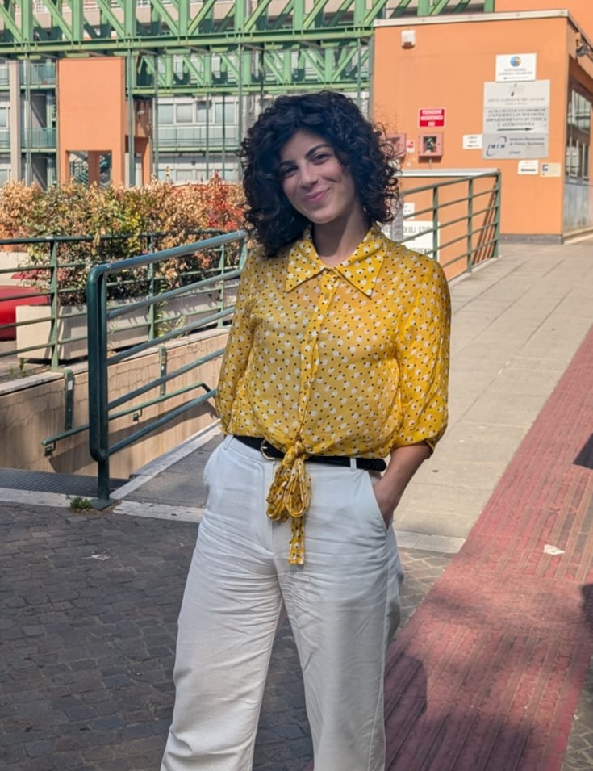

Chiara Notarangelo, PhD
Postdoctoral Fellow at the University of Florence
Fighting unfairness through my research, to the best of my knowledge.
Vegetarian. Mental-health supporter. Lover of handmade crafts in all their forms.
Research Interests
Email
chiara.notarangelo@unifi.it
ORCID
0009-0007-8669-7724